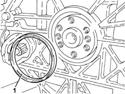
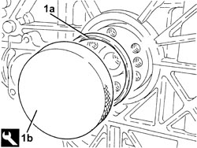
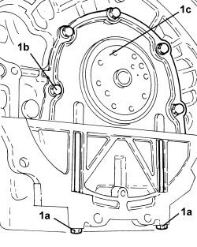
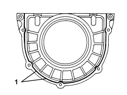

1020D38 FLYWHEEL SIDE OIL SEAL - REPLACE
- Path
- Procedures > 10 ENGINE > 1020 CRANKCASE SUMP AND COVERS > 1020D OIL SEALS ON CRANKSHAFT > 1020D38 FLYWHEEL SIDE OIL SEAL - REPLACE
- Kind
- repair procedure (removal / refitting; the operation number is the code)
- Applies to
- engines: 1.9 JTS, 2.2 JTS, 3.2 JTS, 2.4 JTD 20V; all production periods
- Interactive page
- https://sloeber94.github.io/elrnDB/#/939010435
Applies to: engines: 1.9 JTS, 2.2 JTS; all production periods
 Removing
Removing
 Refitting
RefittingOp. 4450B12 FRONT WHEELS (TWO) - R+R
Op. 1076B72 INTERMEDIATE EXHAUST PIPE WITH HOSE SECTION - R+R
Op. 4410D10 FRONT SUSPENSION FRAME - R+R
Op. 5530B52 BATTERY SUPPORT/DRIP TRAY - R.R
Op. 1072C43 EXHAUST MANIFOLD UPPER BULKHEAD R R
Op. 1072C42 EXHAUST MANIFOLD LOWER BULKHEAD R R
Op. 2110A10 MANUAL GEARBOX AND DIFFERENTIAL - R + R
Op. 1810A24 CLUTCH - R + R WITH GEARBOX REMOVED
Op. 1024B22 ENGINE FLYWHEEL - R.R WITH CLUTCH REMOVED FOR VERSIONS WITH MANUAL GEARBOX
1. Release and remove the flywheel side oil seal.

Applies to: engines: 1.9 JTS, 2.2 JTS; all production periods
Refitting
Removing1. Place a new flywheel side oil seal (1a) in the housing using the tool (1b).
Tool | Description | Function | Validity |
|---|---|---|---|
1860806000 | Fitting tool | Fitting flywheel side oil seal | 1.9 JTS 2.2 JTS |

Applies to: engines: 1.9 JTS, 2.2 JTS; all production periods
Op. 1024B22 ENGINE FLYWHEEL - R.R WITH CLUTCH REMOVED FOR VERSIONS WITH MANUAL GEARBOX
Op. 1810A24 CLUTCH - R + R WITH GEARBOX REMOVED
Op. 2110A10 MANUAL GEARBOX AND DIFFERENTIAL - R + R
Op. 1072C42 EXHAUST MANIFOLD LOWER BULKHEAD R R
Op. 1072C43 EXHAUST MANIFOLD UPPER BULKHEAD R R
Op. 5530B52 BATTERY SUPPORT/DRIP TRAY - R.R
Op. 4410D10 FRONT SUSPENSION FRAME - R+R
Op. 1076B72 INTERMEDIATE EXHAUST PIPE WITH HOSE SECTION - R+R
Op. 4450B12 FRONT WHEELS (TWO) - R+R
Op. 0010T41 MANUAL GEARBOX OIL CHECK LEVEL AND TOP UP IF NECESSARY
Applies to: engines: 2.2 JTS, 2.4 JTD 20V; all production periods
Removing
RefittingOp. 1024B10 ENGINE FLYWHEEL - R + R FOR VERSIONS WITH MANUAL GEARBOX
1. Undo the bolts (1a), then remove the flywheel side oil seal cover (1b).

Applies to: engines: 2.2 JTS, 2.4 JTD 20V; all production periods
Refitting
Removing- Clean any residues of sealant from the mating surface between the flywheel side oil seal cover and the crankcase sump.
1. Place the flywheel side cover (1a) in its housing and secure it tightening the bolts (1b) to the recommended torque.
Component | Fastening | dia | Value (daNm) | Validity |
|---|---|---|---|---|
Flywheel side oil seal cover | Bolt (pretreated to be replaced) | M6 | (engine block side) 0.8 - 1.0 | 1.9 JTD 8V 1.9 JTD 16V 2.4 JTD 20V |

Applies to: engines: 2.2 JTS, 2.4 JTD 20V; all production periods
Op. 1024B10 ENGINE FLYWHEEL - R + R FOR VERSIONS WITH MANUAL GEARBOX
Applies to: engines: 3.2 JTS; all production periods
Removing
Refitting1. Unscrew bolts (1a) and (1b) securing the flywheel side oil seal sealing cover (1c).
- Prise out the sealant and remove the sealing cover with the flywheel side oil seal.

Applies to: engines: 3.2 JTS; all production periods
- Remove the flywheel side oil seal from the sealing cover.
Applies to: engines: 3.2 JTS; all production periods
Refitting
Removing- Clean any residues of sealant from the mating surface between the flywheel side oil seal cover and the crankcase sump.
- Fit a new oil seal on the flywheel side oil seal cover.
1. Apply silicone sealant to the oil sump surface and the flywheel side oil seal cover.

Applies to: engines: 3.2 JTS; all production periods
- Place the flywheel side oil seal cover back in its housing using the bolts fixing the engine crankcase sump as a guide for positioning it correctly.
- Tighten the remaining bolts securing the flywheel side oil seal cover to the engine crankcase.
- Remove the bolts used as a guide and, in their place, screw in the bolts securing the oil seal cover to the engine crankcase and tighten them together with those fitted already.
Component | Fastening | dia | Value (daNm) | Validity |
|---|---|---|---|---|
Flywheel side oil seal cover | Bolt | - | 1.0 | 3.2 JTS |
Topics linked from this page (15)
- 0010T41 MANUAL GEARBOX OIL CHECK LEVEL AND TOP UP IF NECESSARY
- 1004B10 POWER UNIT WITH MANUAL GEARBOX - R.R
- 1004D10 POWER UNIT (MANUAL GEARBOX), REMOVED, DISMANTLE AND REASSEMBLE
- 1024B10 ENGINE FLYWHEEL - R + R FOR VERSIONS WITH MANUAL GEARBOX
- 1024B22 ENGINE FLYWHEEL - R.R WITH CLUTCH REMOVED FOR VERSIONS WITH MANUAL GEARBOX
- 1072C42 EXHAUST MANIFOLD LOWER BULKHEAD R R
- 1072C43 EXHAUST MANIFOLD UPPER BULKHEAD R R
- 1076B72 INTERMEDIATE EXHAUST PIPE WITH HOSE SECTION - R+R
- 1810A20 CLUTCH - R + R
- 1810A24 CLUTCH - R + R WITH GEARBOX REMOVED
- 2110A10 MANUAL GEARBOX AND DIFFERENTIAL - R + R
- 4410D10 FRONT SUSPENSION FRAME - R+R
- 4450B12 FRONT WHEELS (TWO) - R+R
- 5530B10 BATTERY - R+R
- 5530B52 BATTERY SUPPORT/DRIP TRAY - R.R